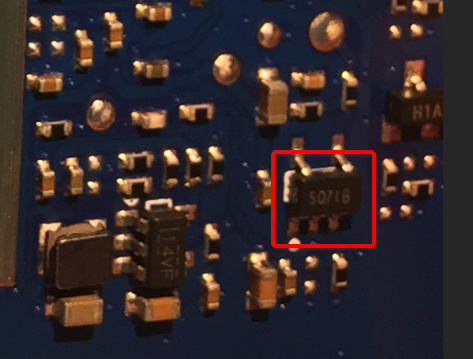
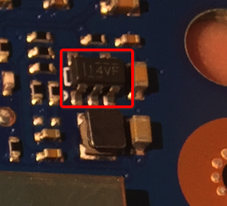
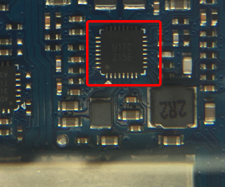

电源管理芯片
电路板中有一些负责给各种芯片提供合适电压和电流的供电=电压转换=电源管理 芯片。下面整理详细信息：
CMOS线性稳压器
电路板上：

看到的是：
SQ71B
自己去研究但没搜到资料。参考这里得知是：
圣邦威电子 sgmicro的SGM2036
圣邦威电子 sgmicro的SGM2036
- SQ71B：是
SGM2036- 是什么：
输出低压差稳压器- 英文叫法：
Low Power, Low Dropout, RF Linear Regulator
- 英文叫法：
- 属于类型：
电源管理Power Management ICs,Low Dropout Regulators=LDO
- 功能作用：
电压转换，给其他芯片提供合适的电压 - 封装：
SOT-23-5 - 详细解释：
- The SGM2036 series low-power, low-dropout, CMOS linear voltage regulators operate from a 1.6V to 5.5V input voltage and deliver up to 300mA output current. They are the perfect choice for low voltage, low power applications. A low ground current makes this part attractive for battery operated power systems. The SGM2036 series also offer low dropout voltage to prolong battery life in portable electronics. Systems requiring a quiet voltage source, such as RF applications, will benefit from the SGM2036 series’ low output noise and high PSRR
- 典型应用
- Cellular Telephones Cordless Telephones PCMCIA Cards Modems
- MP3 Player
- Hand-Held Instruments
- Palmtop Computers
- Electronic Planners Portable/Battery-Powered Equipment
- 官网spec=规格说明书
- 是什么：
同步整流降压转换器=DC-DC Converter
TI TLV62568
从电路板上：

看到的是：
14VF
自己研究没找到。参考这里得知是：
TI的TLV62568
TI TLV62568资料
天猫精灵拆解后的电路板上印的：
- 14VF：是
Marking=打标 - -> 内部芯片的
Part Number：TI的DC-DC转换器TLV62568TLV62568是一个系列，内部分好几个具体的芯片：TLV62568DBV：14VFTLV62568DBV具体对外售卖又有2款：TLV62568DBVR：14VFTLV62568DBVT：14VF
TLV62568PDDC：9XTLV62568DRL：18LTLV62568PDRL：18N
- TLV62568的介绍
- 一句话综述：
采用 SOT 封装的 1A 高效同步降压转换器 - 作用
- （降压变换器用于）降低电压
- 注：相关研究：
- （降压变换器用于）降低电压
- 详细解释
- TLV62568 器件是一款同步降压 DC-DC 转换器，专门针对高效和紧凑型解决方案进行了优化。该器件集成的开关能够提供高达 1A 的输出电流。
- 在中等负载或重载条件下，该器件运行在脉宽调制 (PWM) 模式下，开关频率为 1.5MHz。在轻载情况下，该器件自动进入节能模式 (PSM)，从而在整个负载电流范围内保持高效率。关断时，流耗减少至 2μA 以下。
- TLV62568 的输出电压可通过一个外部电阻分压器进行调节。内部软启动电路可限制启动期间的浪涌电流。此外， 还内置了 诸如输出过流保护、热关断保护和电源正常输出等其他特性。该器件提供 SOT-23 和 SOT563 两种封装。
- 重要参数
- SOT 封装
- 效率高达 95%
- 针对轻载效率的省电模式
- 应用场景
- 通用负载点 (POL) 电源
- 网络视频摄像头
- 机顶盒
- 无线路由器
- 一句话综述：
致新科技 G2156
电路板上：

看到的是：
U17C
2156
自己网上研究没找到。参考这里得知是：
致新科技的G2156
致新科技 G2156 资料
- 芯片名：
致新科技 G2156 - 是什么：
4路同步整流降压转换器 - 作用：
电压转换- 作用：在天猫精灵方糖中为主控芯片
联发科 MTK MT8516供电
- 作用：在天猫精灵方糖中为主控芯片
- 特点：
- 一路3A输出
- 三路1A输出
- 1MHz开关频率
- 可调节的软启动
- PG信号输出
- 逐周期电流限制，过热和过载保护
- 封装：
TQFN4*4 封装